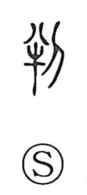

判

Uncategorized
Kun: wakeru, wakatsu, wakareru, sabaku | On: han
to judge ・ to decide ・ to divide
Explanation
判 is a phono-semantic character with 半 as its phonetic element. 半 originally depicts an ox prepared for sacrifice, split into two; adding 刀, the knife, makes the act of cutting explicit. From this image arise the senses of dividing and parting. The character also evokes the primordial division of heaven and earth, as in 剖判 at the opening of the world. In practice, important contracts were written and then cut into two matching halves, each party keeping one. A 判書 was such a divided document with a seal impressed across the cut edge, and disputes were judged by comparing the halves. Out of this ritual of division and verification, 判 came to mean not only to divide but to judge and to make matters clear.